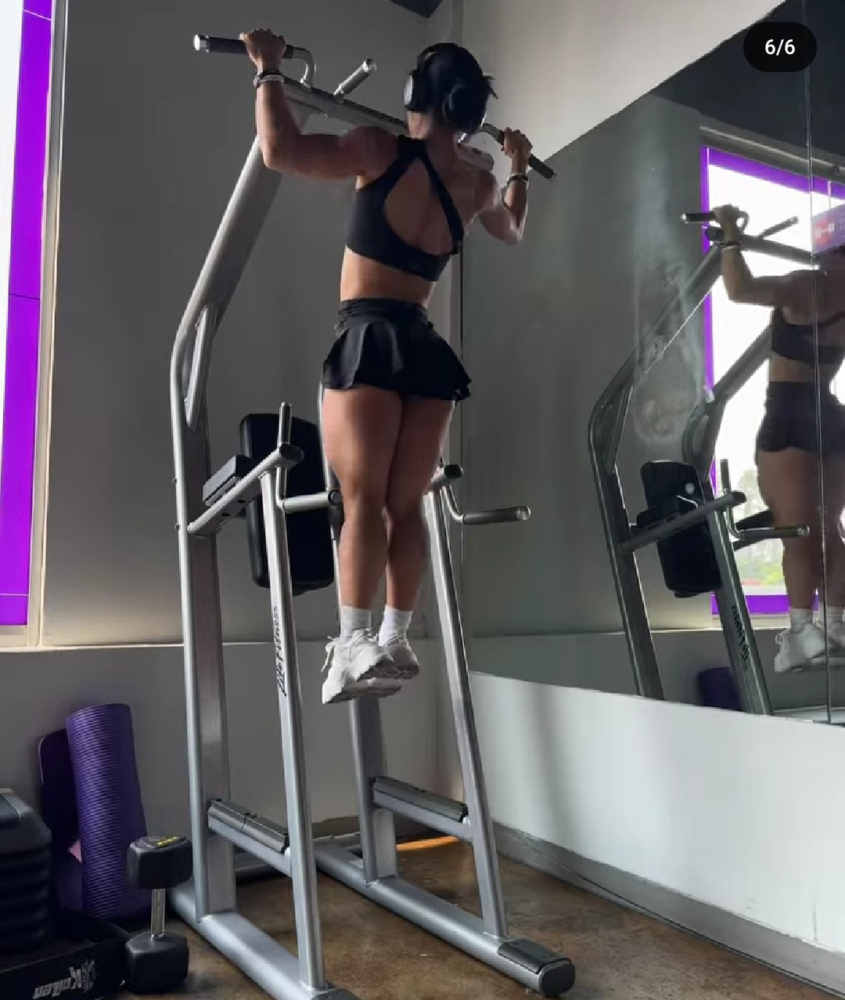
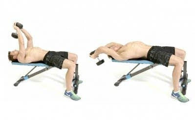

Peso muerto
Este ejercicio es considerado como el mejor para darle grosor espalda, proporcionando una gran
estimulacion del musculo erector de columna
Posicion inicial:
- Colocate de pie frente a la barra con los pies separados con el ancho de los hombros. Contrae los abdominales, saca pecho manteniendo la espalda recta y dobla las rodillas hasta que pueda llegar a la barra.
- Agarra la barra con un agarre prono (los pulgares uno frente al otro), siendo ligeramente mas ancho que la anchura de los hombro.
Ejecucion
- Empieza a levantar la barra del suelo enderezando las piernas, con la barra cerca del cuerpo - Una vez que la barra llega a las rodillas, endereza las piernas mientras estiras la espalda.
- Deten el movimiento una vez que estes completamente vertical.
- Exhala y manten esta posicion durante 2 segundos, mientras que juntas los omoplatos para obtener una estimulacion extra en la parte superior de la espalda.
- De forma controlada, coloca la barra nuevamente en el suelo flexionando la espalda y doblando los muslos.
Series y repeticiones: Realiza 3-4 series de 6-8 repeticiones
Remo con barra
Se trata de otro de los ejercicios para espalda brutal para el desarrollo de la espalda. De todas las modalidades de remos,
es el que permite usar mas peso - esto, por supuesto, es muy beneficioso cuando lo que se busca es ganar masa muscular.
Posicion inicial:
- Manten una ligera flexion de rodillas e inclinate hacia adelante, formando un angulo de 45° entre el tronco y el suelo.
- Manten la espalda recta, el pecho sacado y la cabeza recta, mirando hacia el frente.
Ejecucion
- Sujeta la barra con un agarre prono y las manos un poco mas separadas del ancho de tus hombros.
- Sube la barra a lo largo de los muslos hasta el ombligo. Los biceps y antebrazos solo deben aguantar el peso, no debes contraerlos.
- Tira de la barra con los codos (no con el biceps).
- En la parte superior, junta los omoplatos y manten la contraccion durante 2 segundos antes de bajar el peso.
Series y repeticiones: Realiza 3-4 series de 6-8 repeticiones.
Remo con mancuerna a un brazo

Este ejercicio contribuye tanto a la amplitud como la densidad de la espalda; involucrando al dorsal ancho, romboides,
redondo mayor y trapecio.
Posicion inicial:
- Coloca una mancuerna en el lado izquierdo de un banco plano. El banco se usa como soporte.
- Coloca tu rodilla derecha en la parte inferior del banco, dobla la cintura y coloca la mano derecha en la parte superior de la banca. Tu torso debe estar casi paralelo al suelo, la espalda recta y los abdominales apretados.
- Baja hasta agarrar la mancuerna usando un agarre neutral (con los pulgares hacia arriba).
- Manten el codo ligeramente flexionado y ponte en la posicion anterior, sin arquear la espalda.
Ejecucion
- Levanta mancuerna, centrandote en llevar el codo lo mas atras que puedas - La mancuerna debe moverse en linea recta, cerca del cuerpo rozando la cadera en la parte superior del movimiento. El torso debe permanecer rigido durante todo el movimiento.
- Manten la mancuerna en la parte superior por un segundo, centrate en la contraccion de dorsales, romboides y trapecios. La escapula debe retraerse en la medida de lo posible.
- Baja lentamente la mancuerna, lo que te permite estirar la escapula. Baja tanto como te sea posible sin inclinar la espalda hacia el lado.
- Manten este estiramiento durante un segundo.
- Repite el ejercicio con el brazo derecho (mancuerna a la derecha, rodilla y brazo izquierdos en el banco).
Series y repeticiones: Realiza 3-4 series de 10-12 repeticiones.
Encogimiento de hombros
El musculo trapecio superior se puede desarrollar facilmente sin trabajarlo directamente, pues recibe estimulacion de una
gran cantidad de ejercicios compuestos de espalda.
Sin embargo, si notas que tu cuello es demasiado delgado o que simplemente no te gusta, entonces, el encogimiento de
hombros es la solucion que estabas esperando.
Posicion inicial:
- Colocate frente a la barra con los pies a la altura de los hombros. Contrae los abdominales, saca pecho manteniendo la espalda recta y dobla las rodillas hasta que pueda llegar a la barra.
- Sujeta la barra con un agarre prono y ligeramente mas amplio que el ancho de tus hombros.
Ejecucion
- Levanta los hombros (encoge) todo lo que puedas.
- Manten la contraccion durante 3 segundos, apretando la espalda todo lo que puedas.
- Baja la barra y deja que el peso estire los trapecios.Series y repeticiones: 3-4 series de 10-15 repeticiones.
Pullover con mancuerna

Este ejercicio es un cierre estupendo de la sesion de la espalda, pues permite estirar los dorsales usando una carga pesada.
Esto podria conducir a un mayor crecimiento.
Posicion inicial:
- Coloca una mancuerna de pie, en la parte superior de un banco, justo en el borde.
- Tumbate en el banco, de forma que solo los omoplatos toquen la superficie.
- Coloca los pies en el suelo con firmeza y baja las caderas.
- Coge la mancuerna con ambas manos, presionando las palmas contra la cara interior de la mancuerna.
Ejecucion
- Coloca la pesa por encima de tu cabeza y dobla los codos.
- Manten los brazos rigidos, baja lentamente la mancuerna por detras de la cabeza lo maximo que puedas.
- Manten este estiramiento durante un segundo y sube la mancuerna hasta que quede por encima del final de tu cabeza.
Series y repeticiones: Realiza 2-3 series de 12 repeticiones, centrandote en el estiramiento.